APIE MUS
Veikla
Mokykloje mokomės lietuvių kalbos, skaitome, kuriame, dainuojame ir švenčiame. Mums svarbi ne tik pamoka, bet ir gyva patirtis.
Pavyzdžiui, rudenį rengiame Rudens balių, žiemą – lietuvišką šventę, o pavasarį susitinkame mokslo metų užbaigime.
Skaitykite apie mokyklą spaudoje ir žiniasklaidoje →
Mokyklos veiklos archyvas
Darželio ir 1 klasės -
2024-2025 mokslo metų PABAIGOS video
Atverti 2024-2025 mokslo metų PABAIGOS video ↗
Atverti 2024-2025 mokslo metų PABAIGOS video ↗
Kalėdų šventės akimirkos
2021 Gruodis
Ačiū visiems mokiniams kurie dalyvavo SF Genio piešinio ir emblemos konkurse! Kviečiame pasidžiaugti mokinių darbais ir sveikiname laimėtojus! Tikimės kad GENIO konkursas taps mūsų mokyklos ilgamete tradicija.
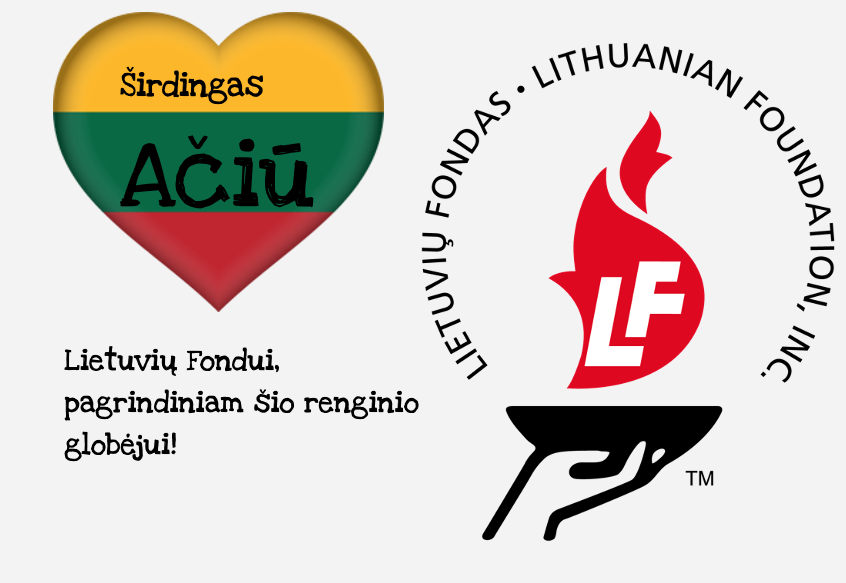
Vasario 16-OS PROJEKTO PADĖKA!
MUMS SMAGU DALYVAUTI!
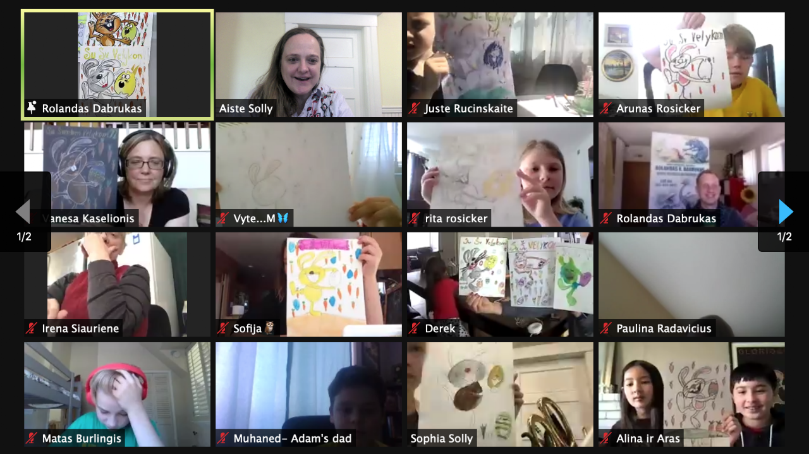
2020.03.27 Velykos
Velykos prieš akis. Geniukams buvo įpatingą mokslo dieną praleisti su autorė/muzikantė/vargoninikė, Laura Gedgaudaitė, ir mum papasakoti knygą „Pasaka apie smuikininką Raimundą". Taip pat grįžo menininkas Rolandas Dabrukas kur kartu piešėm/dažėm linksmą Velykinę zuikį!
Vyriausieji mokyklos "Genys" mokiniai pradėjo prieš Vėlykinę pamoką su knygelės "Pasaka apie smuikininką Raimundą" autorės susitikimu ir įsitraukė į Vėlykinę dvasia susipažindami su nauju instrumentu- vargonais. Autorė Laura Gedgaudaitė ( Lapė Do ) papasakojo, kaip knygelė buvo sukurta, sakė, kad bus dar viena išleista, lauksime naujos ir skaitysime.
Autorė yra ne tik knygelės autorė, bet vargonų muzikos mylėtoja ir namuose turinti vargonus. Vaikai išgirdo visiškai kitaip skambantį Lietuvos himną vargonais. Išgirdome, kaip sudėtinga pagaminti ir groti vargonais. Sužinojome, kad kompozitorius J. S Bachas buvo pagrindinis vargonų muzikos kūrėjas. Ir prieš Vėlykine Aleliuja toliau tęsėme pamokas.
Baigėm mokslo diena meniškai. P. Dabrukas labai moka ištraukti meninę talentą iš mūsų visų- skatino visiems dalyvauti, net mokytojoms ir tėveliams. Išmokom kaip "gerus herojus" dantys nupiešti, skirtumą tarp višto ir kalakuto kiaušino dydžius ir kodėl su akvarėlėm pradėdam dažyti su šviesesno spalvomis į tamsesnius. Pasijuokėm ir pasididžiavome visų įvairių talentus. Dėkojame visų dalyvavimą, nuotaiką ir linkiam visiems smagias Velykinės atostogas.
Kviečiame pažiūrėti Rolando Dabruko dailės pamoką "You're Eggstra Special": www.youtube.com/watch?v=hbl-rhbqnJE
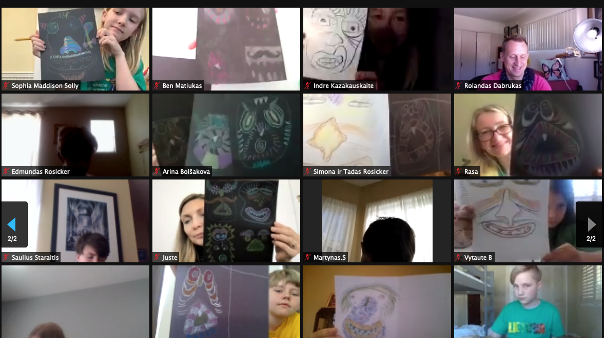
2021.02.20 užGAVĖNIŲ ŠVENTĖ
Vasario 20 dieną „Genio" mokyklos bendruomenėje įvyko išskirtinis Užgavėnių šventės minėjimas, kuriant kaukes kartu su menininku Rolandu Dabruku. Dėkojame už naujas patirtis, buvo labai smagu!
Kviečiame pažiūrėti Rolando Dabruko dailės pamoką "Kaukės": https://www.youtube.com/watch?v=NK9l-iFJizE&t=53s
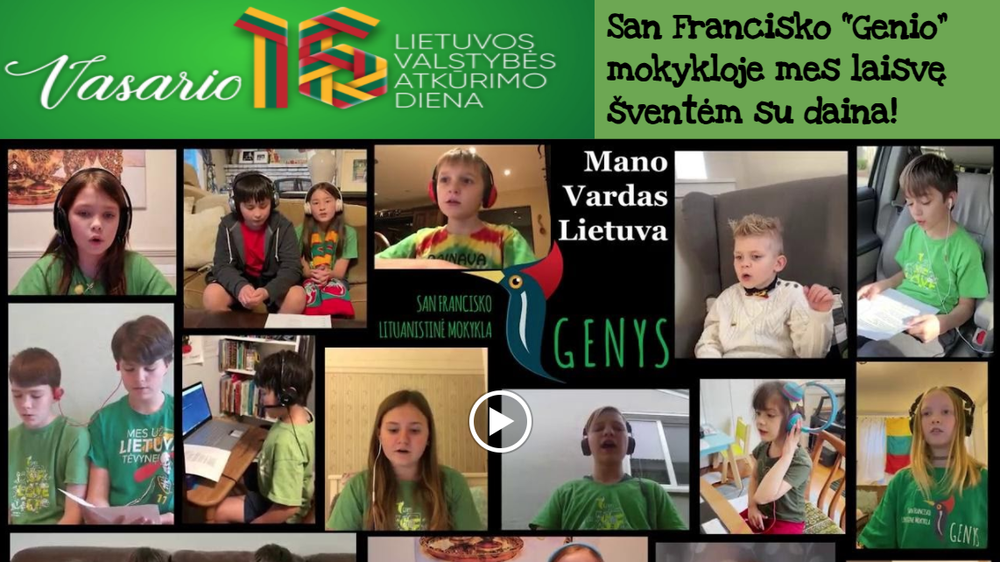
Atverti 2021.02.20 užGAVĖNIŲ ŠVENTĖ ↗
2021.02.16 SVEIKINAME SU VALSTYBĖS ATKŪRIMO DIENA!
Sveikiname su 103-iosiomis Lietuvos Valstybės Atkūrimo metinėmis ir kviečiame pasiklausyti GENIO mokyklos mokinių atliekamų dainų!
1) Mano vardas Lietuva:
https://drive.google.com/file/d/1ZaB64jx-2OTCO635ETctkLn7CBPJ0ZD3/view?usp=sharing
2) Mūsų dienos kaip šventė: https://drive.google.com/file/d/1CmDm6np0RkIE8sNir4K8hNn_56E7ddBb/view?usp=sharing
Už laisvę ir vienybę!
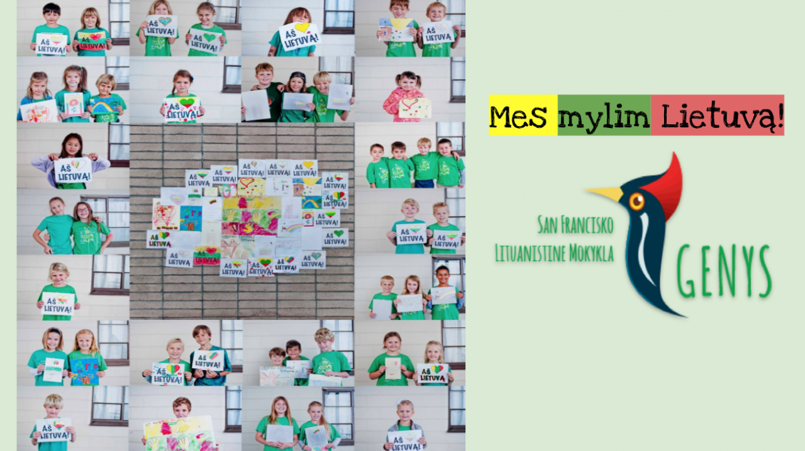
2021.01.09 LAISVĖS GYNĖJŲ DIENOS 30-mečio MINĖJIMAS
Pailsėję ir linksmai sutikę Naujuosius metus, San Francisko lituanistinės mokyklos „Genys“ mokiniai ir mokytojai, po žiemos atostogų sugrįžo į virtualias klases.
Sausį pasitikome jau tradiciniame, bendrame mokyklos virtualiame susitikime, kuriuo pradedame kiekvieną mėnesį. Mokyklos bendruomenės susibūrimai, nors ir prie kompiuterių ekranų, tapo puikia proga išvysti vieniems kitų šypsenas, pasimojuoti bei kartu pasidžiaugti geromis naujienomis, mokinių darbais ir pasiekimais. Ypatinga kiekvieno susitikimo dalis, pradedanti šeštadienį mokykloje – Lietuvos himno sugiedojimas.
Pirmojo 2021 metų mėnesio susitikimą palydėjo išskirtinė proga – Laisvės gynėjų dienos 30-metis, kurį paminėjome klausydami istorijų apie šią Lietuvai ypatingą dieną bei stebėdami dokumentinius kadrus iš 1991 m. sausio 13 dienos įvykių, skambant legendinei Eurikos Masytės dainai „Laisvė“. Vėliau, šokių ir dainų pamokoje, kartu su mokytoja Vanesa, mokiniai klausė ir atliko kūrinį „Tikėkime vienas kitu“, kuriame skamba originalus Vytauto Landsbergio balso įrašas, iš sausio 13 d. nakties įvykių. Džiaugiamės ir didžiuojamės būdami lietuviais ir galėdami švęsti laisvę kartu!
Antroje susitikimo pusėje mokyklos vadovė Aistė Solly pasveikino visus mokinius, mokytojus bei tėvelius su Naujaisiais metais bei pasidalino „Genio” mokyklos bendruomenę pasiekusiais sveikinimais. Išskirtinį sveikinimą parengė ir mokyklos vyriausieji, 7-8 klasės mokiniai, kurie pasidalino įdomiais faktais apie visus dvylika metų mėnesių. Ar žinojote, kad sausio mėnesio pavadinimas simbolizuoja tai, jog tuo metu sniegas būna smulkus ir „sausas“, o spalio mėnesio vardu pagerbiamas linas? Šiuos ir kitus faktus papasakoję mokyklos vyriausieji palinkėjo, kad kiekvienas naujųjų metų mėnesis būtų ypatingas.
Pirmąjį metų susibūrimą užbaigė džiaugsmingi pranešimai apie mokyklos mokinių dalyvavimą konkursuose bei kitus pasiekimus. Juk taip smagu visiems kartu pasidžiaugti vieni kitų mažomis ar didelėmis pergalėmis! Susitikimui pasibaigus mokiniai išskubėjo į virtualias klases, tęsti kelionės po lietuvių kalbos, kultūros bei istorijos žinių pasaulį.
Indrė Kazakauskaitė
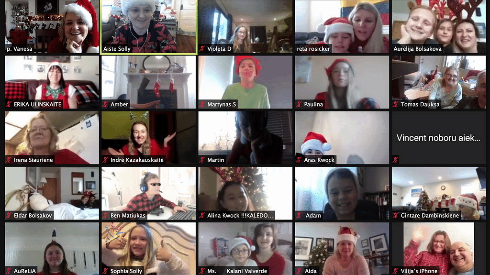
2020.12.19 Virtuali žiemos šventė mokykloje
Gruodžio 19 dieną San Francisko „Genio“ mokykloje praūžė nuostabi kalėdinė žiemos šventė. Šiais metais ji buvo visai kitokia nei ankščiau. Nebuvo rytmetinio šurmulio persirenginėjant kostiumais ir ruošiantis spektakliams, nebuvo sujudimo nešiojant įvairias dekoracijas į salę, nebuvo tėvelių aplink puošiančių stalus, nebuvo gardaus vaišių stalo. Mes to esame be galo išsiilgę.
Nepaisant visko, mokytojos ir visos šeimos puošėsi namuose, ieškojo savo kalėdinių kepurių, kad tik spėtų jas užsidėti, prieš prasidedant virtualioms pamokoms; nekantravo atsidaryt dovanėles, kurias tėvų komitetas atsiuntė ir vaikams ir mokytojoms.
Diena prasidėjo įprastai, savo klasėse, vaikai repetavo savo eiles, dainas, pasirodymus ir ruošėsi bendrai šventei. Šventė prasidėjo kartu žiūrint Kauno Kamerinio Teatro internetu transliuojamą Spektaklį „MILŽINAS MAŽYLIS” ir sužinojo labai daug įdomios informacijos apie Lietuvos piliakalnius. Spektaklis baigėsi nuotaikingu Kalėdų Senelio sveikinimu iš Lietuvos. Na, o tada ir prasidėjo taip ilgai laukta Genio mokyklos šventė.
Mūsų mažiausieji mokinukai, kartu su mokytoja Erika, parengė nuostabią programa su dainom ir vaišėmis, pasakodami apie Kalėdines tradicijas Lietuvoje, apie įvairių patiekalų reikšmę ant mūsų kūčių stalo, sudainavo ne vieną dainą. Džiugu buvo žiūrėt, kaip vaikai stengėsi ir jaudinosi, bet tuo pačiu ir didžiavosi savo pasirodymu. Na, o po jų sekė ir visos kitos klasės su savo eilėraščiais, dainomis, pasakomis. Kiekvienas vaikas turėjo savo eiles, išgirdome kiekvieno vaiko balsą. Kaip smagu girdėti mūsų mokinukus drąsiai kalbant lietuviškai ir matyti, kiek jie jau yra išmokę.
Šventės antroje pusėje žiūrėjome įvairius sveikinimus, vaikų paruoštus animuotus atvirukus ir filmukus, įvairius pasakojimus apie kiekvienos šeimos tradicijas.
Šventė baigėsi bendromis dainomis su mūsų nuostabiąją mokytoja Vanesa. Sunku buvo išsiskirti, nes buvimas kartu, nors ir virtualioje erdvėje, yra pats geriausias mūsų laikas dabar.
Aida Sakalauskaitė
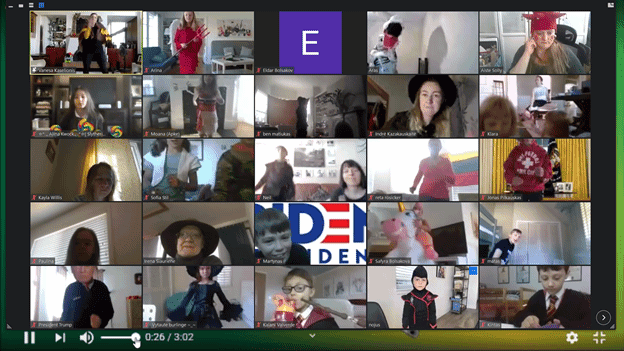
2020.10.30 Virtuali „Rudenėlio” šventė
Spalio 30 dieną “Genio” mokyklos mokiniai surengė kasmetinę “Rudenėlio” šventę. Gaila, kad šiais metais šventė vyko virtualioje erdvėje. Nepaisant to, šventė buvo puiki. Nuo pat ryto visi mokiniai rinkosi į pamokas savo virtualiose klasėse, kur ne tik mokėsi lietuvių kalbos, bet ir aptarė Vėlinių svarbą Lietuvoje ir kaip kitos tautos jas švenčia.
Na, o į dienos pabaigą, visi susirinko į vieną didelį būrį prie kompiuterių ekranų, pasipuošę su savo kostiumais. Labai smagu matyt, kad ne tik vaikai pasipuošė kostiumais, bet ir tėveliais. Mokytoja Vanesa Kaselionis parengė įvairius žaidimus, kuriuos buvo galima žaisti visiems kartu ir stebėti kaip kam sekasi. Vienas linksmiausių žaidimų visiems buvo šeimos nario vyniojimas į mumiją naudojant tualetinį popierių. Gerai, kad jo trūkumo šiuo metu nėra. Reikėjo statyti bokštus iš vaisių, atsirado be galo išradingų vaikų, kaip galima tą padaryti, naudojant įvairiais priemones, kurias galima rasti namie. Prieš šventę, vaikai turėjo lauke prisirinkti įvairių rudeniškų lapų, kurie irgi buvo naudojami bendroms rungtims.
Ypač mokantis virtualioje erdvėje, vaikams yra svarbu žinoti, kad jų bendruomenė yra ne tik jų klasėse, bet ir visoje mokykloje, kad jie gali ir toliau būti kartu nors ir nesusirenkant į mokyklą, kad jie gali žaisti ir džiaugtis rudeniu virtualioje erdvėje ir juoktis už pilvų susiėmę.
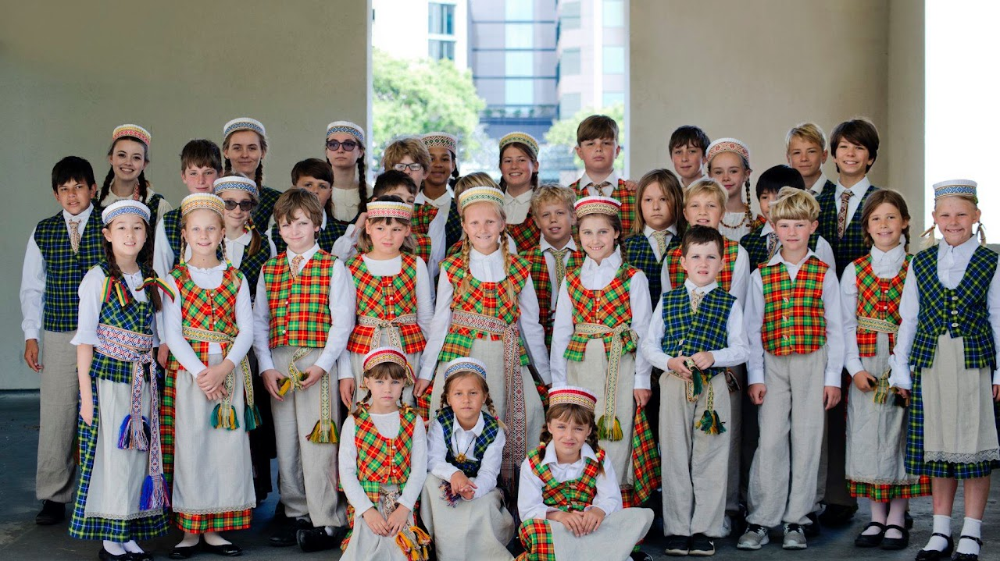
2020.09.09 Nauji mokslo metai bei nauji iššūkiai
Kaip ir daugeliui mokyklų, 2020 mokslo metai prasidėjo taip pat kaip ir baigėsi, netradiciškai. Tiek vaikai tiek mokytojos susirinko prie savo kompiuterių ekranų namuose. Nepaisant to, visi nekantriai laukė naujų mokslo metų pradžios ir džiugiai su šypsenomis jau nuo ryto pasitiko vieni kitus virtualioje erdvėje. Nėra lengva visą savaitę išsėdėti prie kompiuterių kasdien, bet smagu, kad net ir šeštadieniais mūsų šaunūs mokinukai sugrįžo į savo klases Genio mokykloje.
O jų laukė mokytojos, pasiruošusios naujiems mokslo metams virtualioje erdvėje. Iššūkių buvo daug ir reikėjo juos visus išspręsti. Reikėjo nutarti kokia bus pagrindinė platforma mūsų pamokoms, kokias knygas naudosime, kaip įtraukti vaikus drąsiau reikšti savo mintis virtualioje erdvėje, kaip suplanuoti laiką, kad vaikams nenusibostų sėdėt, kaip išjudinti vaikus ir dar daug daug kitų. Kiekviena mokytoja galėjo rinktis kaip jai patogiau būtų dirbti su vaikais. Juk nei viena nėra ekspertė šioje, mums visiems pakankamai naujoje, mokymo formoje. Buvo nutarta, kad google classroom, google meet, zoom, eduka, seasaw platformos bus labiausiai prieinamos vaikams, nes jie jau puikiai su jomis pažįstami kasdienėje virtualios mokyklos aplinkoje. Na o tada kiekviena sukūrė jose savo pasaulį, kuriame vaikams būtų gera ir smagu dirbti.
Taip pat teko šiek tiek keisti ir pamokų tvarką. Pavasarį, mokyklai netikėtai persikėlus į virtulią erdvę, didelis dėmesys buvo skirtas gramatikai, rašymui ir skaitymui, kad vaikai ir toliau mokytųsi lietuvių kalbos fundamentalius pagrindus. Na, o per vasarą kilo mintis vėl grąžinti vaikų pamėgtas šokių ir dainų pamokas su mokytoja Vanesa. Reikia pripažinti, kad kol kas puikiai sekasi net virtualioje erdvėje po visų rimtų pamokų, susirinkti kartu ir pajudėti. Gal pradžioje buvo šiek tiek ir nedrąsu, bet įsivažiavus kojos pačios šoka.
Mūsų šeštadieniai visada prasidėdavo visiems susirinkus su himnu ir pranešimais. Tai šiek tiek sunkiau padaryti dabar, todėl nutarėm, kad kartu visa mokykla rinksis pirmą mėnesio šeštadienį giedoti himno kartu virtualiai, o kitais šeštadieniais susitikimai prasidės iškart klasėse. Tuo pačiu, pirmas mėnesio šeštadienis dabar bus skirtas ir trumpam kiekvienai klasei pristatant ką nors apie save, kad mes visi ir toliau matytume vieni kitus ir žinotume kas ką veikia kiekvienoje klasėje.
Didžiausias iššūkis, be abejo, yra mokytojoms, kurioms reikia ne tik visiškai naujai ruošti medžiagą, bet ir nuotaikingai pravesti pamokas virtualioje erdvėje. Taip buvo pasitelktos jungtinės mokytojų pajėgos ir pasidalinus tarpusavyje atsirado nemažai idėjų kaip klasės atmosferą bei mokymą padaryti įdomiu ir turiningu. Mokytoja Aiste Siaurytė Solly buvo pagrindinė mūsų įkvėpėja ir informacijos šaltinis. Jos patirtis dirbant su daugeliu mokymo programų padėjo mokytojoms susirasti ir pasirinkti tai, kas joms labiausiai tinka. Buvo prieita nuomonės, kad reguliarūs mokytojų susirinkimai-seminarai būtų labai naudingi. Mokytoja Aistė sudarė programą visiems metams. Nuo šiol, kartą per mėnesį, vyks seminarai-apmokymai mokytojoms, kuriuos rengs mokytoja Aistė. Jų metu bus pateikta daugiau informacijos, kaip kurti pozityvią atmosferą klasėje, kokios mokymo priemonės tiktų labiausiai kiekvienai amžiaus grupei, kaip įtraukti tylius vaikus dalyvauti aktyviau klasės metu ir dar daugelis kitų temų. O po jų vyks diskusijos. Pirmas seminaras įvyko rugsėjo 26 dieną, užsitęsė daug ilgiau nei planuota, bet tuo pačių buvo be galo naudingas. O mokytojų entuziazmas tiesiog stulbinantis – nuostabus kolektyvas.
Panašu, kad darbo bus tikrai daug šiais metais, bet tuo pačiu norime ir pasidžiaugti, kad mūsų mokytojų kolektyvas pasiruošęs tęsti jau pradėtą darbą, mokytis dirbti naujoje erdvėje, ir toliau mokyti vaikus lietuvių kalbos bei kultūros. Nuostabus jausmas matyti, kaip greitai ir aktyviai visi išmokome prisitaikyti naujame mokyklos pasaulyje ir džiugu, kad ir toliau galime tęsti mūsų mokyklos darbą.
Dalyvavimas ir pasiekimai

Ačiū visiems dalyvavusiems konkurse.
SF GENIO mokiniai buvo apdovanoti LT atributika
Atverti SF GENIO mokiniai buvo apdovanoti LT atributika ↗
Kviečiame pasižiūrėti ir pasidžiaugti mokinių darbais apie laisvę :)

Labai džiaugiamės kaip mūsų mokiniai dalyvauja projektuose. Sveikiname mokyjos Aurelijos klasę reprezentuojant mūsų mokyklą tarptautiniame projekte: Lietuva Sakmėse ir Padavimuose su K. Borutos DANGUS GRIŪVA.
Ačiū mokytojai aurelijai ir jos mokiniams :)
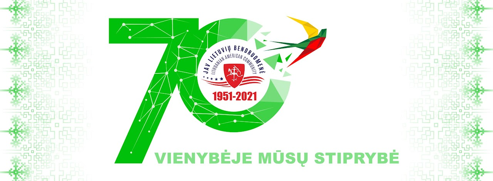
JAV LB Švietimo taryba organizavo piešinių konkursą “Lietuvos vienybės žiedas” skirtą JAV LB 70-mečiui paminėti.
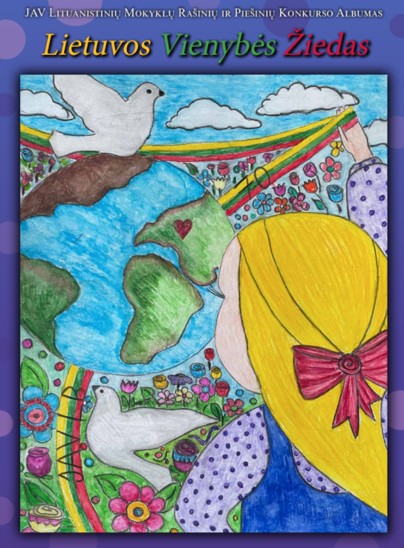
Mūsų mokinių darbai išleistame JAV LB 70-mečio elektroniniame leidinyje. Pasidžiaugiame :)
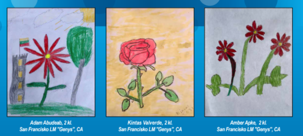
2-os klasės darbai.
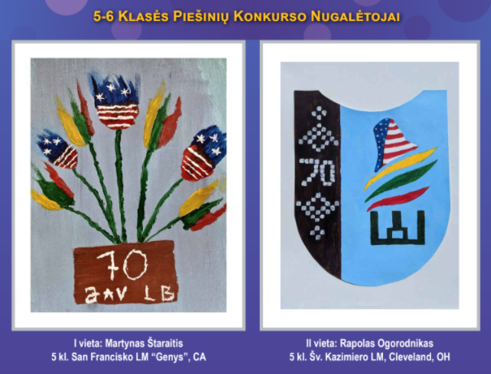
5-os klasės darbai
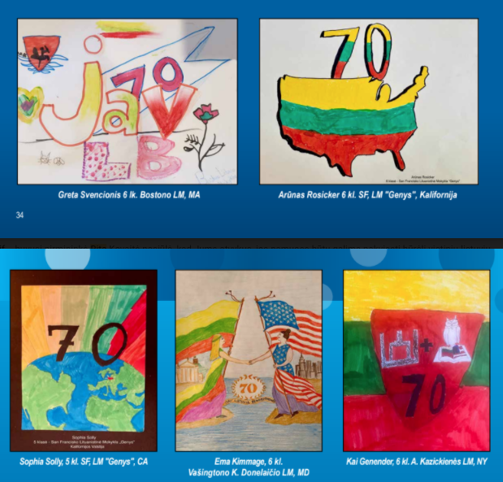
5-os ir 6-os klasės darbai.
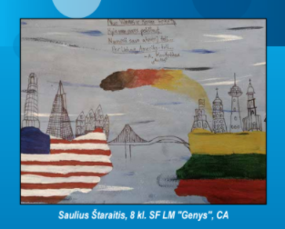
8-os klasės darbai
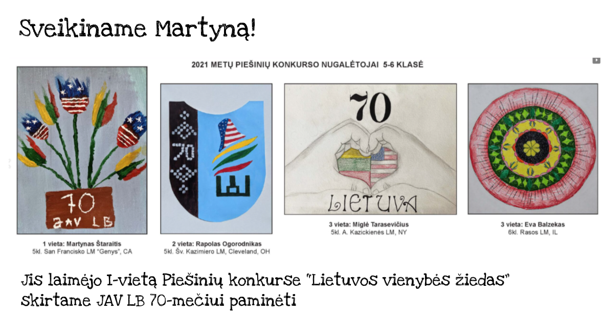
Sveikiname JAV LB lituanistinių mokyklų konkurso laimėtojus ir dalyvius!
Piešinius vertino: Rolandas Dabrukas, dailininkas, iliustratorius, Lina Giusti – dailės mokytoja, keramikė, Rita Clemens – dizainierė.
Premijų mecenatas – Lietuvių Fondas.
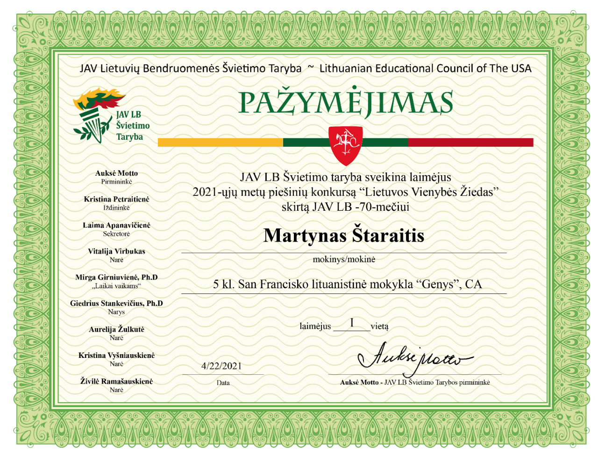
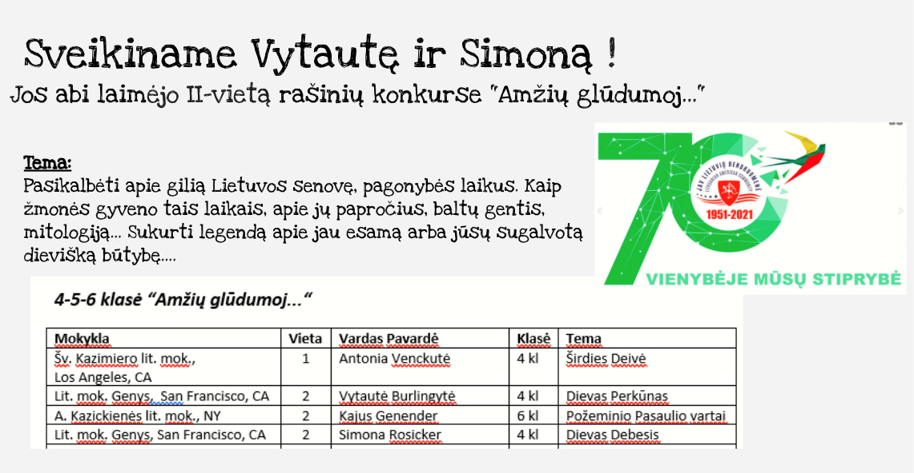
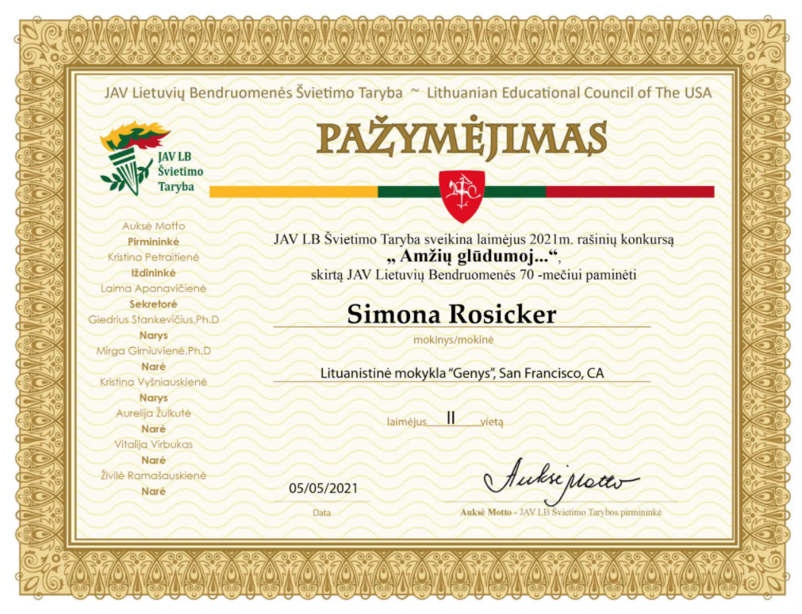
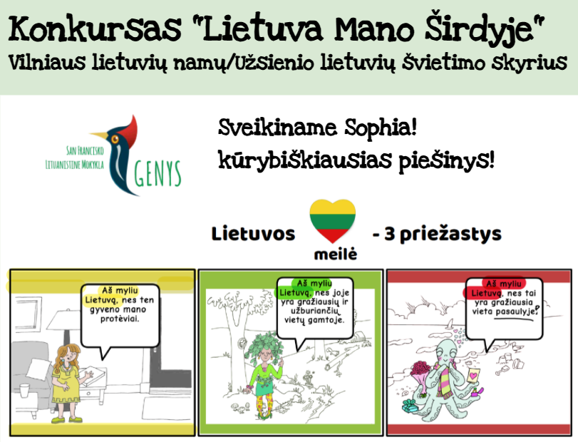
Sveikiname!
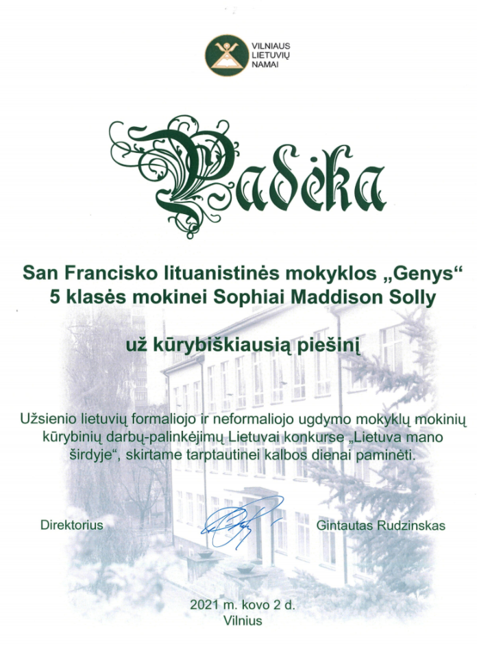
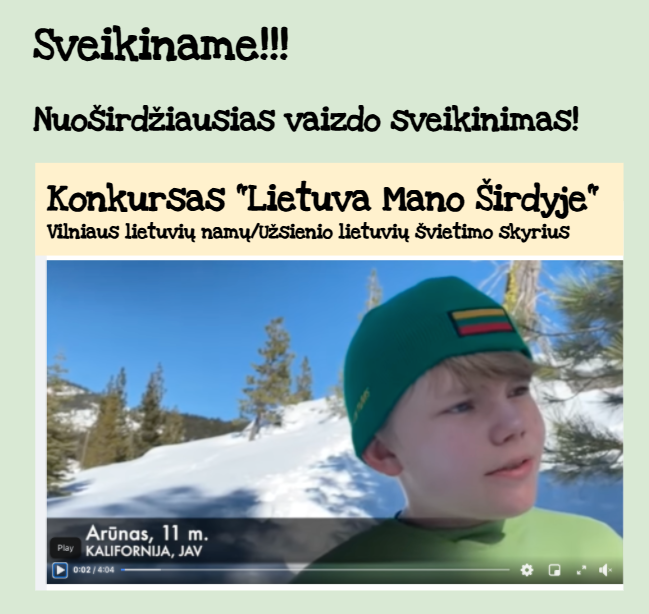
SVEIKINAME!
Paspauskite ir pamatysite VIDEO!
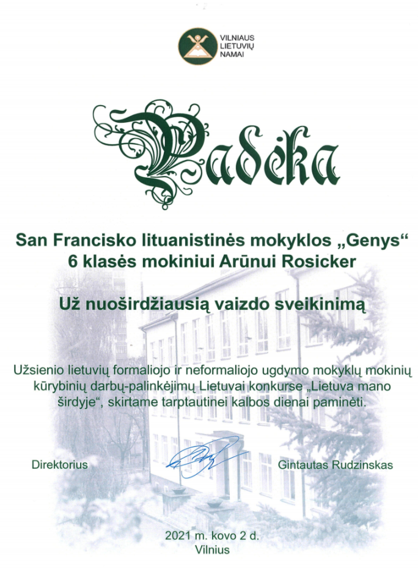
2009–2014 m. mokyklos vaizdo įrašai
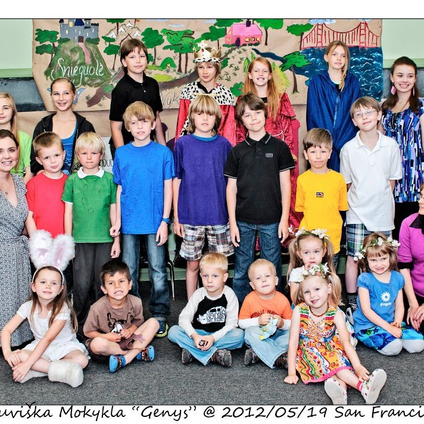
2012 užbaigimo Metų vaidinimas "Snieguolė"
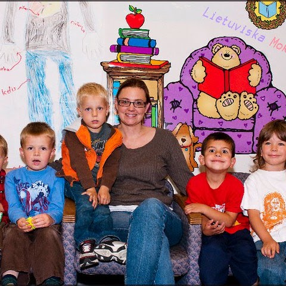
2010 priešdarželio klasė
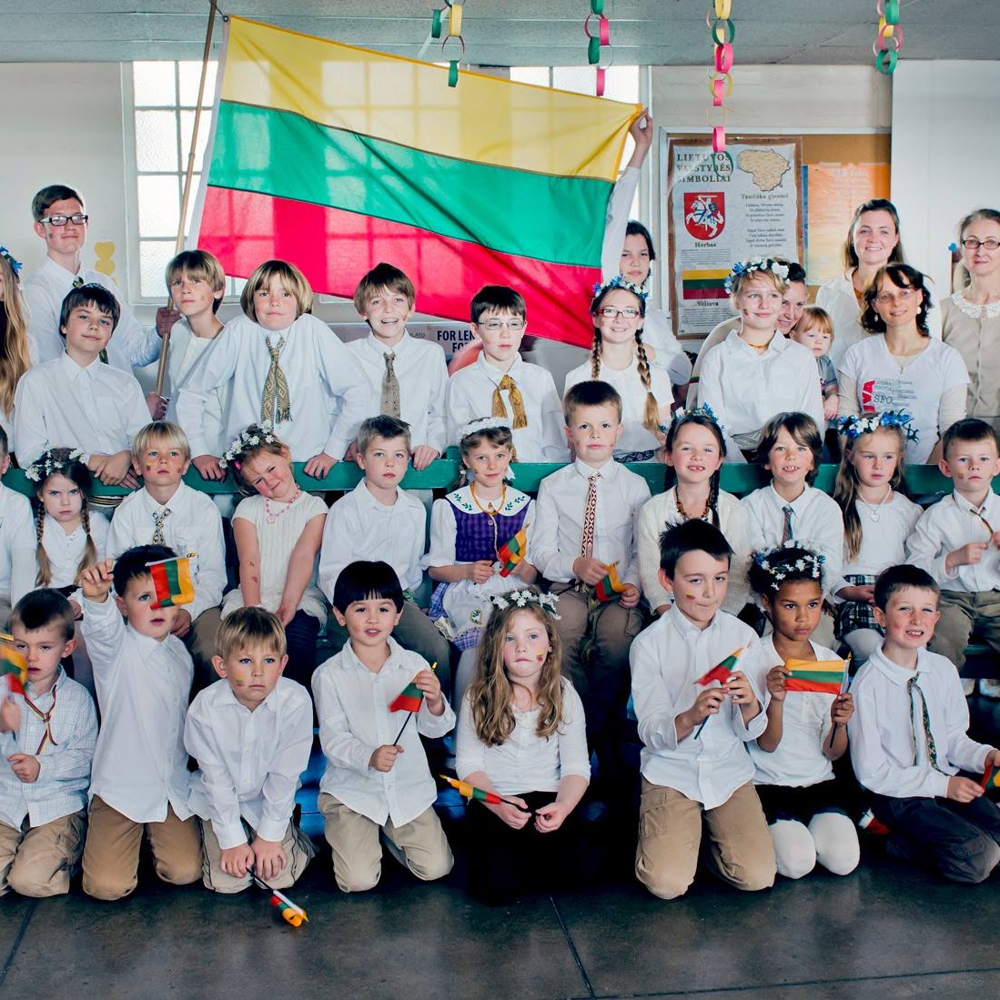
2014 Nepriklausomybės Minėjimas
Atverti 2014 Nepriklausomybės Minėjimas ↗
2011 SF International Children's Festival- Golden Gate- Kalvelis
Atverti 2014 Nepriklausomybės Minėjimas ↗
2011 SF International Children's Festival- Golden Gate - Noriu Miego
Atverti 2014 Nepriklausomybės Minėjimas ↗
2011 SF International Children's Festival- Golden Gate Park- Šustas
Atverti 2014 Nepriklausomybės Minėjimas ↗
2014 Kalėdų Ėglute Spektaklis - "Kalėdų Eglutė"
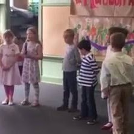
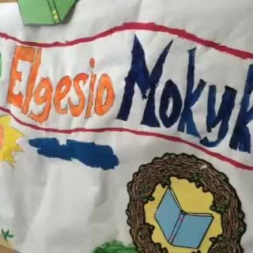
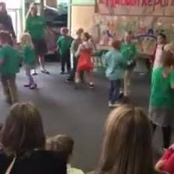
Atverti 2014 Nepriklausomybės Minėjimas ↗
2014 Kalėdų Eglutė - Spektaklis " Pelenę"